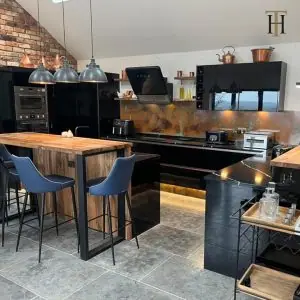
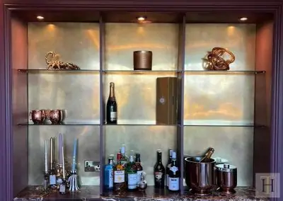
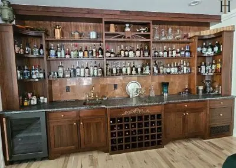
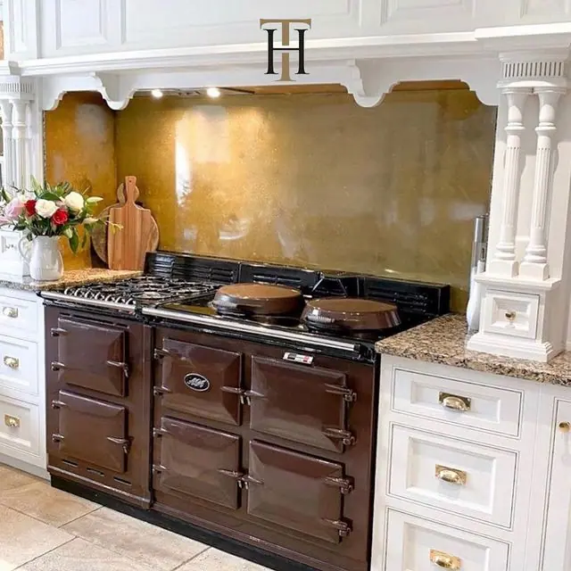
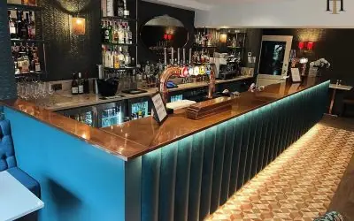

You’ll find brass wall panels in offices, hotel lobbies, bars, bistros, interior designs and anywhere a statement piece is required.
We work with homeowners, business owners, architects, interior and exterior designers and anyone who appreciates the special qualities of brass as a wall covering!
Contact Halman Thompson for a free, no-obligation brass wall panel quotation !
CHOOSE A FINISH


CUT TO SIZE
- Pricing includes delivery and turnaround time is just 5-8 weeks
- Each piece is coated in a gloss finish lacquer that prevents the sheet from further aging
READY TO GO
We can provide bespoke cut metal with each of our finishes being wrapped around wood and lacquer finished.
Please get in touch for a bespoke quote .
Brass wall panel finishes
Brass wall panels are available in a range of aged brass finishes as well natural brass .
All panels are made by hand by experienced artisans and finished to your exact specifications. All are created to order and can be created to deliver the patina you’re looking for.
We can laser cut to any shape up to 2000mm x 1000mm in size. Wall panels will be aged or prepared to your own design and can be protected in tough, transparent lacquer to protect the look.
Brass wall panels are available in the following finishes:
- Somerset finish – Engaging stained glass-style patina where you get to see just how lovely brass can be
- Wiltshire finish – Lighter aged brass finish with an interesting dappled effect that draws the eye
- Cambridgeshire finish – Milled brass finish that displays the charm and ageless appeal of this lovely metal
- Natural brass finish – Natural brass finish that demonstrates exactly why brass is still incredibly popular in design
BESPOKE BRASS WALL PANELS
All brass wall panels are made by hand to order. Everything we make is hand-crafted by experienced artisans who take great pride in their work.
All brass wall panels begin life as sheets of brass. We cut each piece to shape and size according to your requirements. Aged brass wall panels will then be aged using specialist processes before being sealed in a tough, transparent lacquer to protect it.
Natural brass wall panels can be left as bare metal or protected in the same tough lacquer.
CARING FOR YOUR BRASS WALL PANEL
Caring for your brass wall panel is easy!
Simply use a soft cloth and warm soapy water to remove dirt and debris. That’s it!
The lacquer we use is designed to protect the panel from everyday use and from the environment.
Full care instructions are included with every panel so you’ll know exactly what to do.
Contact Halman Thompson for a free, bespoke brass wall panel quotation. Alternatively, complete the form below and we’ll get back to you!
Wall Panel Projects

Northumberland Aged Copper Splashback and Plinths
Architecture , Copper , Copper Splashbacks , Interiors , Kitchens , Wall Panels

Berkshire Bronzed Brass Home Bar
Brass , Interiors , Kitchens , Wall Panels

Aged Brass Accents on Home Media Wall
Brass , Decoration , Interiors , Living Rooms , Wall Art , Wall Panels

Aged Copper Tiles for an American Home Bar
Copper , Copper Splashbacks , Interiors , Kitchens , Tiles , Wall Panels
Brass Gallery
Bright Gloss Lacquered Aged Brass
Somerset Gloss Table Top
Decorative Brass Sheet Behind Shelving
Berkshire Bronzed Brass Finish
Natural Brass Backsplash
Patina Brass Dining Table Taps
Wiltshire Aged Brass Splashback
Somerset Brass Splashback with Gloss Finish
Bespoke Somerset – Blues, Green and Pink
Berkshire Bronze Brass 2
Aged Brass
Aged Brass
HT Bathroom
Wiltshire Brass Backsplash with Matte Finish
Aged Brass Backsplash
Berkshire Bronzed Brass Finish
Berkshire Bronze Brass 1
Berkshire Bronze Matte Lacquer
Berkshire Bronzed Brass Finish
Aged Brass – Berkshire Bronze Sink
Somserset Aged Brass Kitchen Splashback
Natural Brass
Aged Brass – Kitchen Berkshire Bronze Brass
Berkshire Bronze Splashback
Berkshire Bronzed Brass Finish
Natural Brass Kitchen Splashback
Brass Kitchen Splashback
Antiqued Brass Splashback
Berkshire Bronzed Brass Finish
Aged Brass
Berkshire Bronze Finish
Berkshire Bronzed Brass Finish
Wiltshire Brass Kitchen Splashback
Berkshire Bronze Brass
Berkshire Bronze Kitchen Splashback
Berkshire Bronzed Brass Finish
Light Wiltshire Gloss
Wiltshire Brass with Matte Finish
Aged Brass – Splashback
Aged Brass Splashback
Aged Brass – Somerset Splashback
Patina Brass Sheet for Shelf Display
Berkshire Bronzed Brass Finish
Dark and rich copper and bronze tones that developed during our process not too much patina coming through
Wiltshire Gloss
Aged Brass – Sink
Aged Brass Sheet as Cupboard Backdrop
Berkshire Bronzed Brass Finish
Antique Brass Splashback
Berkshire Bronzed Brass Finish
Natural Brass
Patina Brass Splashback
Berkshire Bronzed Brass Finish
Wiltshire Gloss Brass Splashback
Natural Brass – Kitchen Sink
Aged Brass with Light Shades of Greens, Pinks and Blues
Natural Brass – Kitchen Splashback
Somerset Brass Splashback Finish
Berkshire Bronze Sink
Inspiration


20 Bedroom Interior Decor Ideas
Brass , Copper , DIY , Interiors
The bedroom is our personal sanctuary—a space where we begin and end each day. Creating a bedroom that reflects your personality while promoting relaxation and rejuvenation is essential for overall wellbeing. Whether you're seeking to completely transform your...

Innovative Restaurant Bar Design Ideas to Transform Your Commercial Space
Brass , Copper , DIY , Interiors
Creating a standout bar area in your restaurant is crucial for enhancing customer experience and boosting revenue. Whether you're designing a new space or upgrading an existing one, thoughtful design choices can transform your bar and restaurant into a memorable focal...

Inspiring Hotel Design Ideas for Luxury Guest Experiences
Brass , Copper , DIY , Interiors
Creating a memorable hotel experience requires more than just comfort and convenience. Guests expect exceptional aesthetics, thoughtful details, and an ambience that leaves a lasting impression. Whether you're developing a new hotel design concept or revamping an...
If you can dream it, we will create it.


If you can dream it, we’ll make it.
Bars, balustrades, staircases, worktops, cladding and pieces that don’t have a name yet. Our designers and craftspeople work in brass, copper, zinc and steel, and alongside wood.